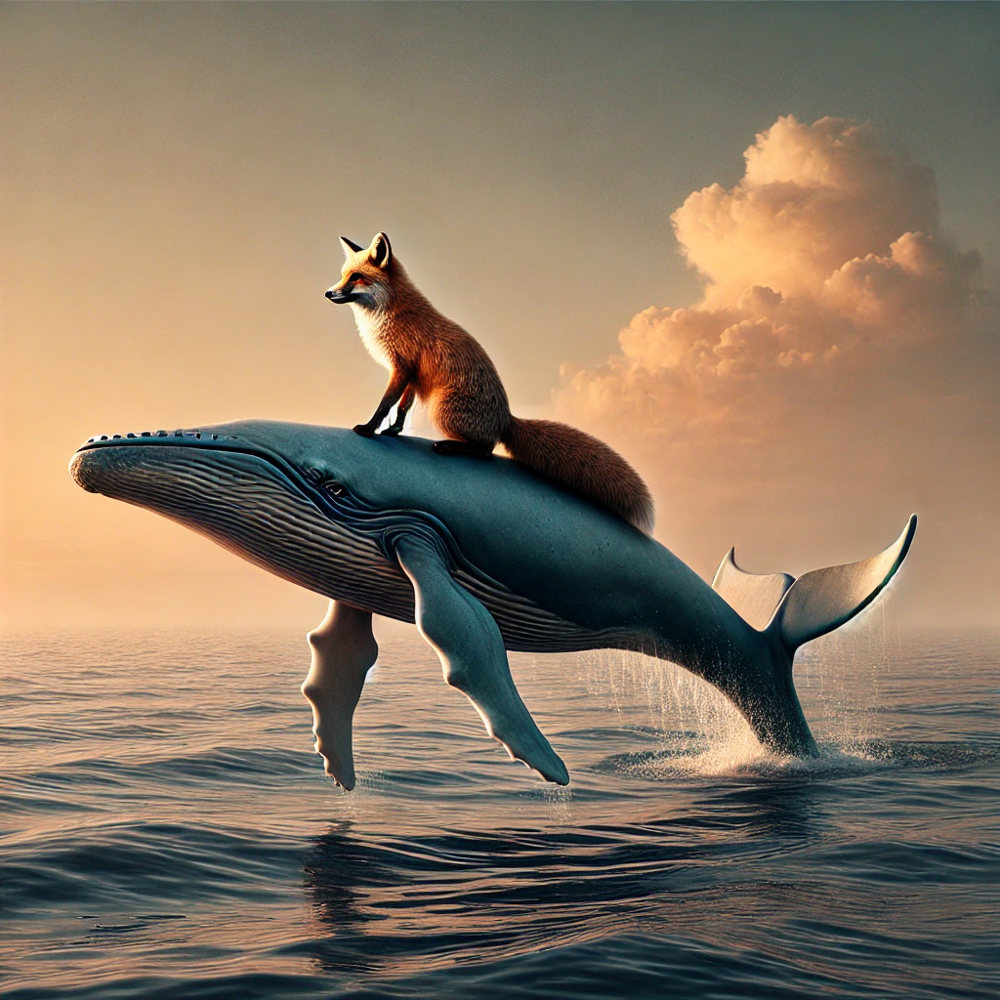

Gratulation!
Du hast es geschafft! Ich möchte dich gerne bei deinem neuen Sattel für Milka unterstützen :)! Und auch wenn wir schon öfter darüber gesprochen haben, möchte ich mit meinen amateurhaften Kameraskills versuchen, dich und deine Pferde abzulichten. :)
